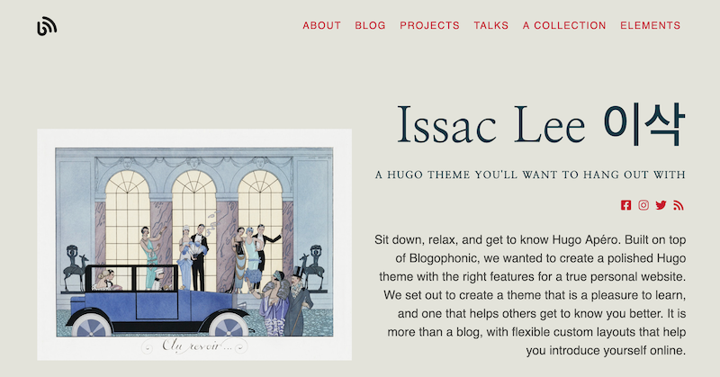
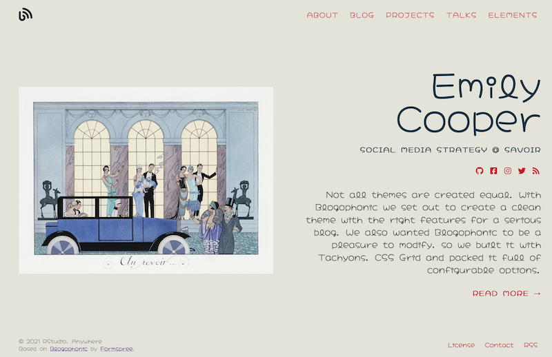

As with color themes, you can completely customize your site’s fonts within minutes of creating a new site. How you do it depends on how much control and customization you need.
Hugo Apéro includes 6 embedded fonts that work “out of the box.” We selected 3 serif and 3 sans-serif options that we thought looked good with this theme, in our humble opinions. All embedded fonts include real italics so you may emphasize to your heart’s content :heart:! How to choose?
You may choose fonts for headings and body text in your site’s config.toml file. Scroll down to find:
[params]
<!--snip snip-->
# use an embedded font-family
# serif options: Fraunces / EB Garamond / Bitter
# sans-serif options: Commissioner / Alegreya Sans / Metropolis
# if you import your own fonts, name them here too
customtextFontFamily = "Commissioner"
customheadingFontFamily = "Fraunces"Here are the links to each font so you can see them in action:
<table class="collapse ba bw1 b--moon-gray mv4 w-100">
<thead>
<tr>
<th class="f6 fw6 tl ttu pa3">Serif options</th>
<th class="f6 fw6 tl ttu pa3">Sans-serif options</th>
</tr>
</thead>
<tbody>
<tr class="stripe-dark">
<td class="pa3"><a href="https://fraunces.undercase.xyz/">Fraunces</a></td>
<td class="pa3"><a href="https://github.com/kosbarts/Commissioner">Commissioner</a></td>
</tr>
<tr class="stripe-dark">
<td class="pa3"><a href="https://fonts.google.com/specimen/EB+Garamond">EB Garamond</a></td>
<td class="pa3"><a href="https://fonts.google.com/specimen/Alegreya+Sans">Alegreya Sans</a></td>
</tr>
<tr class="stripe-dark">
<td class="pa3"><a href="https://fonts.google.com/specimen/Bitter">Bitter</a></td>
<td class="pa3"><a href="https://fontsarena.com/metropolis-by-chris-simpson/">Metropolis</a></td>
</tr>
</tbody>
</table>Alternatively, you may want to use a system font, which you know will be rendered reliably across languages, operating systems, and browsers. Apéro uses Tachyons to render beautiful system font stacks for your site, making it super simple to configure and blazing fast to load. The default choices are sans-serif or serif, and can be assigned to headings and body text, respectively. Additional options can be found in the Tachyons Font Family Reference. Why use system fonts?
Relying on systems fonts greatly improves page performance and can also help your web application/site blend in with the user’s operating system. Readability is strongly linked to familiarity, so this helps create a more fluid reading experience, allowing your users to focus on your content.
Here is a step-by-step, using the config.toml file:
Leave both customtextFontFamily and customheadingFontFamily blank (with empty quotes, or comment out the line entirely).
Just below those keys, select a textFontFamily and headingFontFamily from the options listed here. All values are lower case, and exclude the . in front.
[params]
<!--snip snip-->
# use an embedded font-family
# serif options: Fraunces / EB Garamond / Bitter
# sans-serif options: Commissioner / Alegreya Sans / Metropolis
# if you import your own fonts, name them here too
customtextFontFamily = ""
customheadingFontFamily = ""
# alternatively, leave empty and select basic font options: sans-serif or serif
# for more http://tachyons.io/docs/typography/font-family/
textFontFamily = "sans-serif"
headingFontFamily = "serif"For example, you may choose:
textFontFamily = "courier"
headingFontFamily = "baskerville"And your site would look like:
Alright alright alright. So you still want to use your own fonts. You’ll need to do a bit more work to get this working, but not too much. If you made it here, I’m going to hope that you know a bit more about self-hosting fonts.
Here are the steps:
Create a static/fonts/ folder, and add the actual font files you’d like to embed to that folder. To download Google fonts, there is a popular app to help you. Select a font, then download the zip file containing the font files you’ll need to embed.
Create an assets/ folder in the root of your website project (don’t add it to your themes/ directory!).
Create a file named custom.scss in the new assets/ folder to define the @font-face CSS rule for each font/weight combination you downloaded. For example, here is a custom.scss that imports the Nanum Myeongjo font. The webfonts helper app will help write your CSS for you (using ../fonts/ to customize the folder prefix correctly by default), like this:
/* nanum-myeongjo-regular - latin */
@font-face {
font-family: 'Nanum Myeongjo';
font-style: normal;
font-weight: 400;
src: local(''),
url('../fonts/nanum-myeongjo-v15-latin-regular.woff2') format('woff2'),
url('../fonts/nanum-myeongjo-v15-latin-regular.woff') format('woff');
}Your final step is to go back to your config.toml file and add the font-family values for the font(s) you want to use to the customtextFontFamily and/or customheadingFontFamily keys. You can combine custom fonts with system fonts too.
[params]
<!--snip snip-->
# use an embedded font-family
# serif options: Fraunces / EB Garamond / Bitter
# sans-serif options: Commissioner / Alegreya Sans / Metropolis
# if you import your own fonts, name them here too
customtextFontFamily = ""
customheadingFontFamily = "Nanum Myeongjo"
# alternatively, leave empty and select basic font options: sans-serif or serif
# for more http://tachyons.io/docs/typography/font-family/
textFontFamily = "sans-serif"
headingFontFamily = ""Here is what this could look like (thanks to workshop participant Issac Lee!)

If you do all this, you have my consent to delete the theme’s static/fonts/ folder that holds all the custom embedded fonts so you aren’t carrying those unnecessary files around with your site (do not delete the static/webfonts/ folder- that holds the Font Awesome icons!).
For example, let’s examine the 3 commits necessary to make this magic happen:
